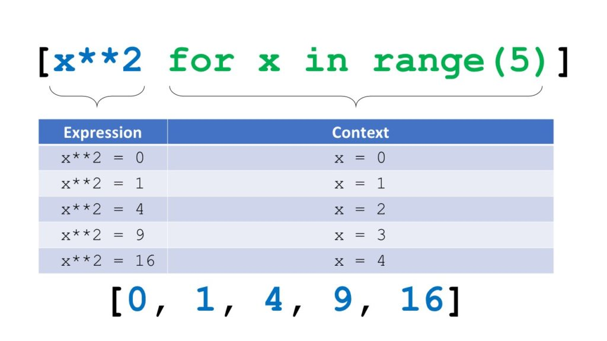
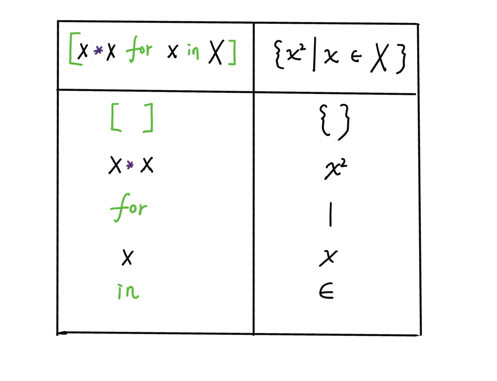

列表推导式唯一的用处就是增强代码的可阅读性，初次接触可能比较难理解，但是大家一定要理解，文本分析中经常会用到ta。

问题1 用列表表示集合X
$X= {x| x \in [1,2,3,4,5,6,7,8,9,10]}$
X = [1,2,3,4,5,6,7,8,9,10]
X
[1, 2, 3, 4, 5, 6, 7, 8, 9, 10]
X = list(range(1, 10))
X
[1, 2, 3, 4, 5, 6, 7, 8, 9]
问题2 表示集合Y
$Y = {x^2| x \in [1,2,3,4,5,6,7,8,9,10]}$
Y = []
for x in X:
Y.append(x*x)
Y
[1, 4, 9, 16, 25, 36, 49, 64, 81]
列表推导式
实现步骤
- 先复制X
- 再对X中的元素x进行操作
#先复制X
[x for x in X]
[1, 2, 3, 4, 5, 6, 7, 8, 9]
#再对x进行操作
[x*x for x in X]
[1, 4, 9, 16, 25, 36, 49, 64, 81]
理解列表推导式

带条件的列表推导式
$C= {x^2 | (x \in X) \cap (x>5)}$
#复制X
[x
for x in X]
[1, 2, 3, 4, 5, 6, 7, 8, 9]
#X中的要大于5
#[x for x in X if x>5]
[x
for x in X
if x>5]
[6, 7, 8, 9]
#对满足条件的x进行操作
#[x*x for x in X if x>5]
[x*x
for x in X
if x>5]
[36, 49, 64, 81]
问题3 全部小写
words = ['Life', 'is', 'short', 'so', 'we', 'use', 'Python', 'python',
'is', 'easy', 'to', 'learn', 'and', 'easy', 'to', 'use']
words
['Life',
'is',
'short',
'so',
'we',
'use',
'Python',
'python',
'is',
'easy',
'to',
'learn',
'and',
'easy',
'to',
'use']
lower_words = [w.lower() for w in words]
lower_words
['life',
'is',
'short',
'so',
'we',
'use',
'python',
'python',
'is',
'easy',
'to',
'learn',
'and',
'easy',
'to',
'use']
问题4 计算lower_words列表数据的单词词频
wordset = set(lower_words)
[(w, lower_words.count(w)) for w in wordset]
[('so', 1),
('and', 1),
('learn', 1),
('use', 2),
('to', 2),
('we', 1),
('easy', 2),
('python', 2),
('is', 2),
('short', 1),
('life', 1)]
#1 生产词语集合
wordset = set(lower_words)
print(wordset)
{'so', 'and', 'learn', 'use', 'to', 'we', 'easy', 'python', 'is', 'short', 'life'}
#2. wordset复制wordset自己
[w for w in wordset]
#3. 对wordset中每个词语w进行一些操作
[lower_words.count(w) for w in wordset]
[1, 1, 1, 2, 2, 1, 2, 2, 2, 1, 1]
#3. 词频和词语一起显示
[(w,lower_words.count(w)) for w in wordset]
[('so', 1),
('and', 1),
('learn', 1),
('use', 2),
('to', 2),
('we', 1),
('easy', 2),
('python', 2),
('is', 2),
('short', 1),
('life', 1)]
问题5
d = {'x': 'A',
'y': 'B',
'z': 'C' }
如何将d中的 键值对 拼接,输出为
['xA', 'yB', 'zC]
d = {'x': 'A',
'y': 'B',
'z': 'C' }
d.items()
dict_items([('x', 'A'), ('y', 'B'), ('z', 'C')])
#1 自己复制d.items()自己
[i for i in d.items()]
[('x', 'A'), ('y', 'B'), ('z', 'C')]
#2 对任何一个元素都要进行字符串的拼接操作
[i[0]+i[1] for i in d.items()]
['xA', 'yB', 'zC']